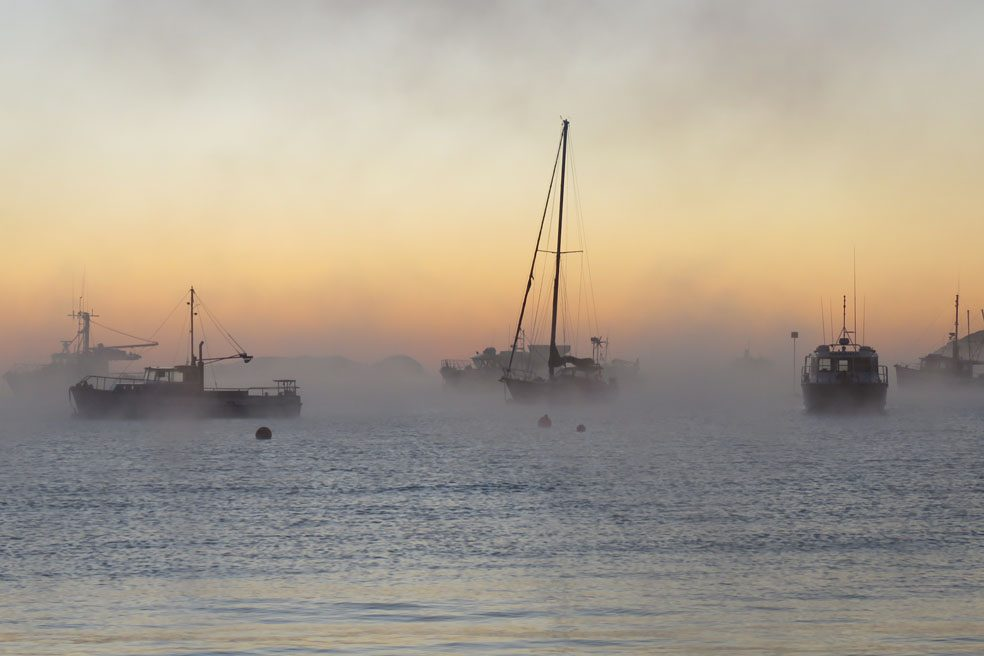

Climate and natural environment

Rakiura Stewart Island, situated south of Aotearoa New Zealand's South Island, boasts a temperate maritime climate that significantly influences its landscape and biodiversity. The region is characterised by cool temperatures throughout the year, with average summer highs around 19°C and winter lows rarely falling below 4°C. This climatic stability fosters a unique environment, although it also brings considerable rainfall, averaging between 1,500 to 2,500 millimeters annually. The island is known for its frequent overcast skies and persistent winds, which contribute to the rich ecosystems that thrive both on land and in the surrounding waters.
The high rainfall levels and mild temperatures create a lush habitat that supports a variety of native flora. The vegetation consists primarily of dense coastal forests, dominated by species such as rimu, kahikatea, and tōtara, along with a rich understory of ferns and shrubs. Rakiura is also home to several unique plant species that are found nowhere else in the world, highlighting its importance in biodiversity conservation. Such climatic conditions not only sustain a diverse range of plant life but also support various animal species, many of which are endemic to the area.
The fauna of Rakiura Stewart Island is particularly notable, featuring species like the iconic kiwi and the rare yellow-eyed penguin, both of which rely on the island's untouched landscapes for their survival. Conservation efforts are actively in place to protect these native species and their habitats. Organisations collaborate with local communities to maintain ecosystem integrity through initiatives such as predator control programs and habitat restoration projects. These efforts aim to ensure the survival of Stewart Island's unique flora and fauna for generations to come, reinforcing its status as a vital ecological treasure in New Zealand.
Stewart Island NZ. (2021, June 5). About Stewart Island: Climate and natural environment. Stewart Island NZ. https://stewartislandnz.com/about/